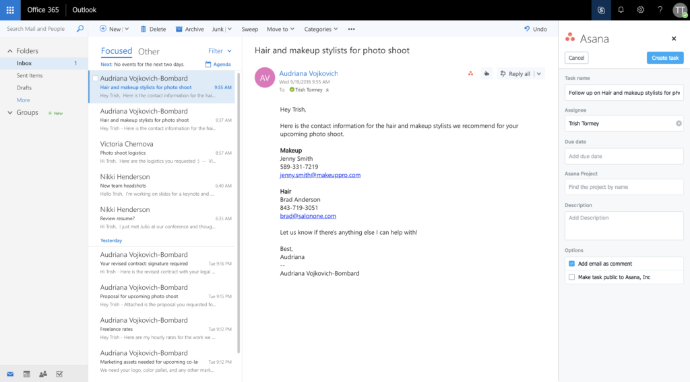

By Trish Tormey
Oct 04, 2018
When working with people on different teams or outside of your organization, such as agencies, vendors, and contractors—you probably try to coordinate work via email. But as you go back and forth, action items and attachments quickly get buried in long email threads. Pretty soon, to-dos are pushed to the bottom of your inbox, buried in a folder, or accidentally deleted.
Beginning today, you and your team can use Asana for Outlook to turn your emails into trackable, actionable work. This new integration enables you to turn your emails in Outlook into new tasks or comments in Asana—without switching tools.
“Having the ability to seamlessly track emails in Asana means our work is centralized in one place. This helps me manage my team’s workflow and prioritize quickly, and ensures nothing falls through the cracks. This integration has made our team more focused, efficient and faster.”
– Harriet Bond, Global Manager PMO, PPM, Anheuser-Busch InBev
This new integration is available to everyone that uses Asana and has an Office 365 subscription. In addition to the Outlook Web App, we support the Outlook 2016 desktop app. Here’s how to install it:
1. Go to the Microsoft AppSource and click Get It Now.
2. Follow the instructions to add the Asana plugin to your Outlook inbox. Admins will see the option to install this for everyone in their organization.
3. Then, you will see Create Task and Open Asana Add-in buttons with the Asana logo in the top bar of your Outlook inbox.
4. Click Create Task to turn the email into a new task in Asana or Open Asana Add-in to add the email as a comment to an existing task for context.
5. The side pane will open so you can create the new task or attach the message to an existing task.
As action items come in via email, like reviewing work from your agency or a request for design assets from a partner, you can now create tasks for them in Asana right from Outlook. You can then assign the new task to yourself or a teammate, set a due date, and add it to a project so it’s connected to other relevant work. To turn the email into a task, simply click Create Task in Outlook top bar.
Additionally, the integration utilizes artificial intelligence to find and highlight action items within your email. When action items or tasks are spotted, they are highlighted by a blue link that you can select and quickly create a new task in Asana.
Your entire team probably isn’t copied on every email chain that includes information they need to do their jobs. But without these details and context, they can’t effectively do their work. Whether it’s a proposal from an agency, an email from a candidate with their contact information, or another team at your company requesting design resources, you want your entire team to have the right information to do their job.
It’s time to stop digging around in your email inbox for to-dos and important details, and instead turn your emails into trackable work in Asana that you can manage from start to finish. With Asana for Outlook, you can use each tool for what it was designed to do—communicate in Outlook and manage work in Asana—so your team knows what they need to do and when they need to do it by so work gets done on time.
Comments: